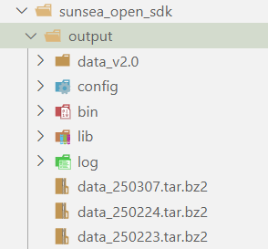
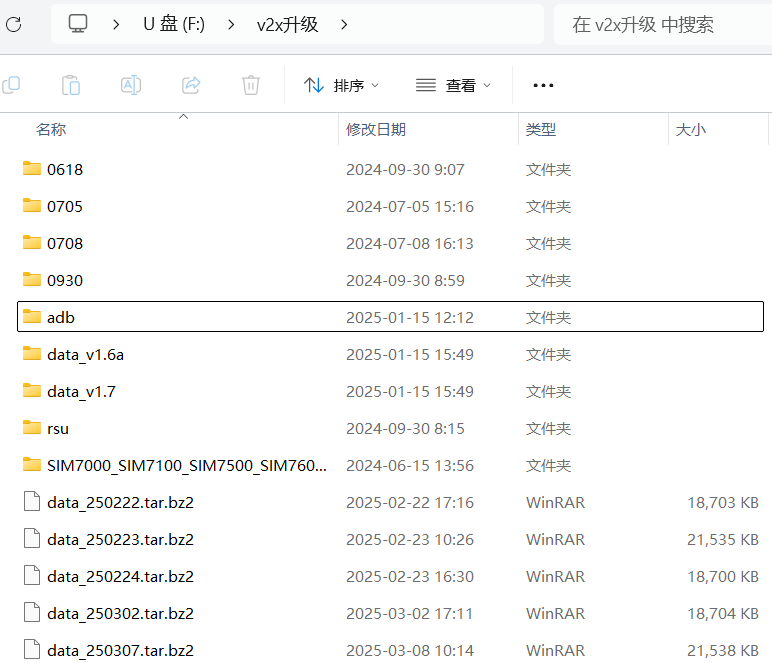
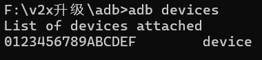
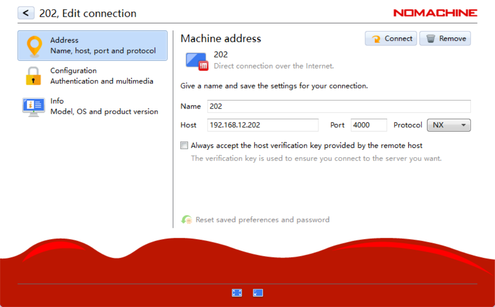

车联网车模调试步骤
源码编译构建
写完代码后，需要编译构建生成可执行文件，才能烧录到车模上运行。
打开终端默认进入home目录（即 ~），运行以下命令：
小问题
这里会花费超长一段时间，请耐心等待。
漫长的编译结束后，运行以下命令：
其中最后的一串神秘代码其实是版本号，可以随便写，一般用当天日期。
运行完成后在sunsea_open_sdk/output目录下会生成一个升级包，将其下载下来备用。

V2X升级（很抽象的名字）
插入U盘，将刚刚的tar.bz2文件下载到U盘的v2x升级文件夹下。

进入adb文件夹下，在该目录下打开cmd终端（地址栏输入cmd然后回车）。
注意
这里只能用cmd终端，用powershell会找不到命令。
用一根数据线连接车模的最上层后方的从左到右的第二个Type-C接口（原来连的那根线拔掉）到电脑上。
在cmd终端中运行
| Text Only | |
|---|---|

找到了devices说明连接正确了，如果找不到的话把车上的Type-C端口反过来插试试。
回到v2x升级目录下，打开sim8800升级工具.exe文件，点击打开文件路径，选择刚才下载下来的tar.bz2文件，接着点升级应用。
完成后拔掉数据线，将原来的接口插回去。
远程连接车模OBU系统
连接局域网H3C_8956F4，打开NoMachine，

Username为nvidia，password是123456。
启动车模
连接上车模主板系统后，打开终端，运行 adb devices，返回设备信息说明连接成功。运行 adb shell进入设备。
打开三个终端，第一个终端进入adb shell后运行
第二个终端进入adb shell后运行
| Bash | |
|---|---|
第三个终端（不进入adb shell）运行
重新烧录程序后，不想重新启动车模，可以在adb shell的/data/data/bin路径下，执行
然后重复上面的步骤即可。
车端控制程序调试
通过Windows 资源管理器访问车端系统
在启动车模主板并连接局域网的情况下载资源管理器地址栏输入 \\192.168.12.202 进入车端控制程序目录。
进入到
| Text Only | |
|---|---|
launch中的 v2xinterface202.launch中确定了启动文件，一般是scripts中的v2xinterface文件夹下的.py文件。
修改对应代码后，需要将 startautoware.sh程序停止，然后把车模舵机/电机开关关闭后再重新打开，并reset控制板，此后重新运行 startautoware.sh程序，车模会以新的程序运动。
通过SSH 连接远程访问车端系统
在VSCode 中SSH 连接车端系统
其中IP地址的最后一位为200+车模编号，如2-car的IP地址为192.168.12.202。
连接成功后进入ychd\ychd-planB\src\wheeltec_robot_rc目录，其余配置同上。